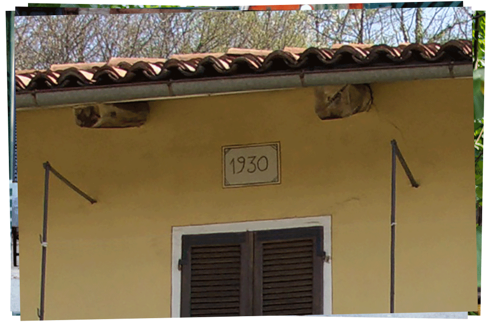
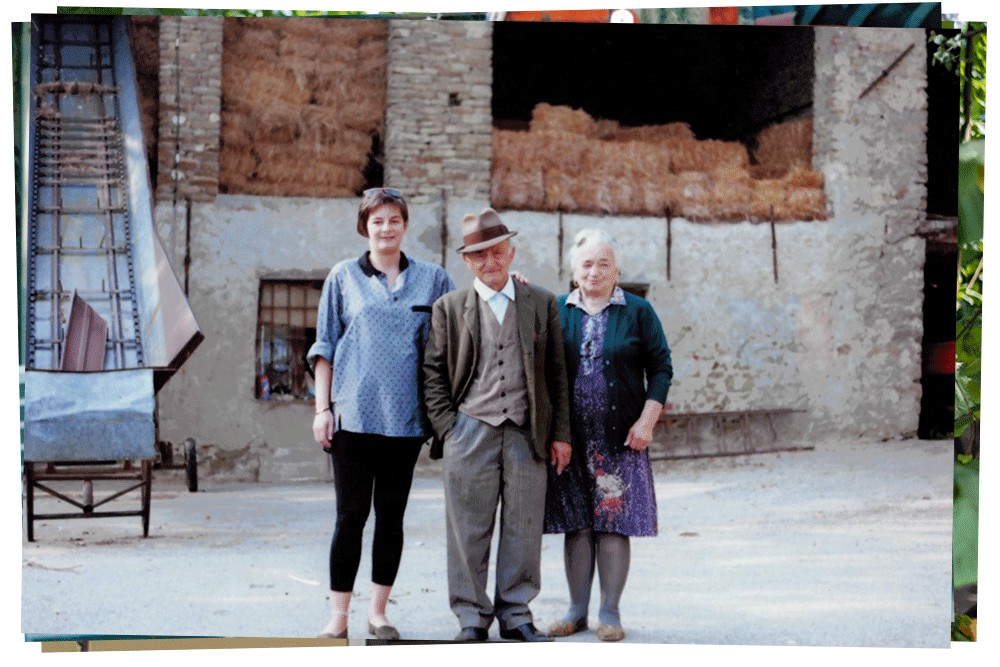
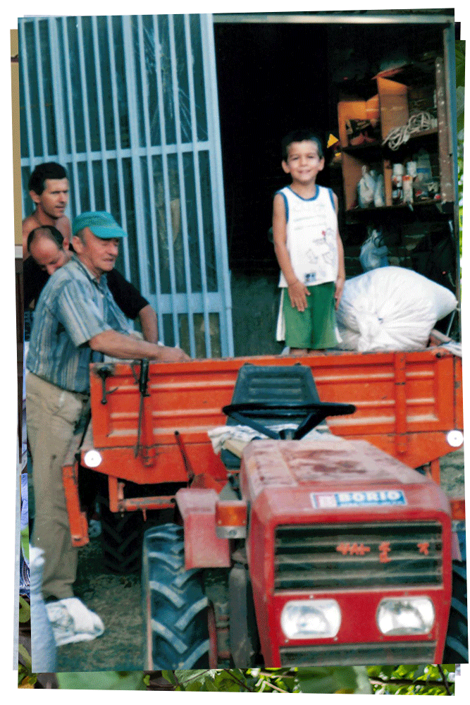
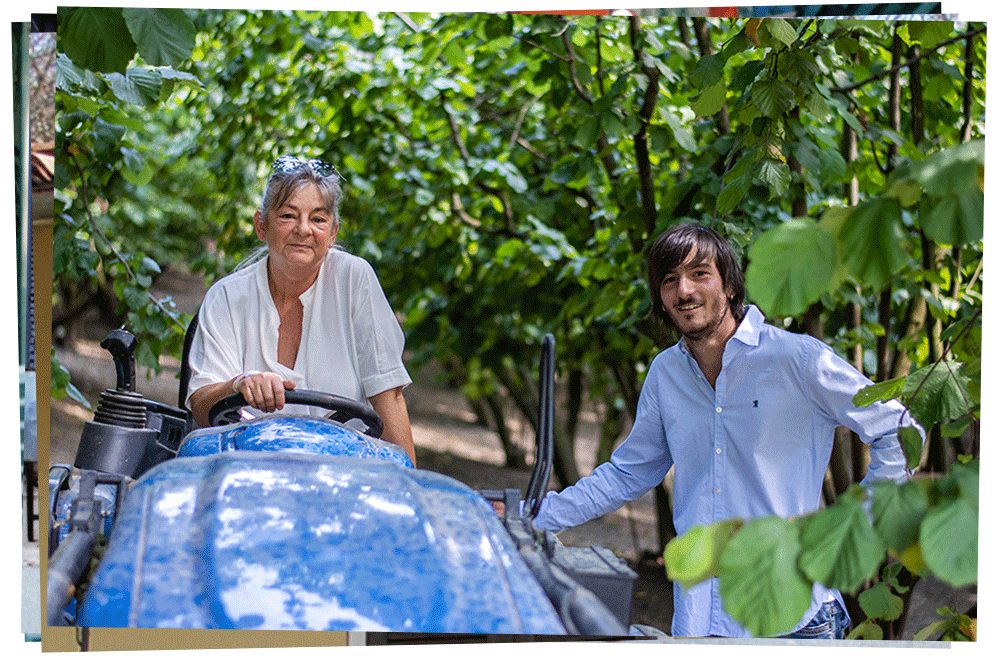

UNSERE GESCHICHTE
Um die Geschichte dieses Hofes zu erzählen, müssen wir fast ein Jahrhundert zurückgehen. Seitdem hat sich vieles verändert, aber nicht der Respekt unserer Familie vor der Natur und die Liebe zu unserem Land.
Alles begann, als Luigi, auch bekannt als "paneturot" (Bäcker) und Urgroßvater von Andreas, seinen Beruf als Bäcker aufgab, um sich der Bewirtschaftung seines geliebten Landes rund um das Haus zu widmen, das von seiner Frau Teresa betreut wurde, in Serravalle Langhe. Damals war das Land hauptsächlich mit Weizen, Mais, Futterpflanzen und einigen Reihen Weinreben bepflanzt, aus denen die Familie etwas Wein herstellte. Damals war der Haselnussanbau auf kleine Parzellen beschränkt, die besonders die besonders steil und zerklüftet waren und auf denen nichts anderes angebaut werden konnte.
Detail der Fassade mit Angabe des Baujahres
Luigi und Teresa mit ihrer Enkelin Loredana
In den 1960er Jahren beschlossen Luigi und sein Sohn Giovanni, den kleinen Weinberg auf dem Grundstück hinter dem Haus durch einen Haselnusshain zu ersetzen. Damals war die Haselnussernte noch reine Handarbeit und daher hart und mühsam, aber sie war auch ein unvergessliches Aber es war auch ein unvergessliches Familienerlebnis, denn viele Verwandte halfen mit und machten die Ernte zu einer Zeit des Feierns und des Lachens. Während alle auf den Feldern arbeiteten, gab Teresa in der Küche ihr Bestes und bereitete fantastische Gerichte zu insbesondere ein Ragout, dessen Duft sich im ganzen Haus verbreitete und denjenigen, die diese Jahre miterlebt haben, in ewiger Erinnerung bleiben wird.
Diese Gewohnheiten änderten sich jahrelang nicht, bis 1994 das Hochwasser, das die Gegend heimsuchte, auch unsere Felder nicht verschonte und mit seinen unaufhörlichen Wasserströmen die Arbeit eines ganzen Lebens vernichtete. Bei dieser Gelegenheit nahm Giovanni, genannt Gianni und Großvater von Andreas, die Sache selbst in die Hand nahm und beschloss, an dieses Land zu glauben, indem er neue Felder kaufte und neue Haselnussbäume pflanzte. Die Dorfbewohner sahen mit Erstaunen zu, wie Giannis unermüdliche Bemühungen mit der unschätzbaren Hilfe seiner Frau Carla vollendet wurden. seiner Frau Carla.

Giovanni mit Schwiegersohn Flavio und Enkelsohn Andreas
Loredana und ihr Sohn Andreas
Gianni und Carla haben ihre Wette gewonnen: Es ist ihnen gelungen, den Wert ihres Grundstücks trotz allem und jedem zu steigern. Aber das ist noch nicht alles: Sie konnten die Prinzipien, die Luigi und Teresa vor ihnen leiteten, an ihre Tochter Loredana
und mit ihr an ihren Enkel Andreas weitergeben. an ihre Tochter Loredana und mit ihr an ihren Enkel Andreas. Derselbe Enkel, der ihnen schon als Kind geholfen hat, ist jetzt Anfang zwanzig und hat beschlossen, in dieses Land zu investieren,
angetrieben von denselben Werten: Respekt für die Natur und Liebe für das Land.
«Auch wenn ich meinen Urgroßvater Luigi nicht näher kennen gelernt habe, erkenne ich ihn doch jeden Tag, wie er von seinen zwei jahrhundertealten Bäumen aus, die niemand je anrühren wird, über unsere Arbeit wacht und die
Werte, die so stark sind, dass sie ein Jahrhundert unversehrt überstanden haben und immer noch so leidenschaftlich sind wie am ersten Tag.»
Azienda agricola Andreas Morra | P. iva 03815860048
Via Monastero, 1, Loc. Quazzo, 12050 Serravalle Langhe CN
Telefon: +39-3279947784 | Komm. Ref.: +39-3331601545
e-mail: a.agricolamorra@gmail.com


Copyright 2021 - Alle Rechte vorbehalten | Erstellt von Pietro Cagnasso | Foto von Giacomo Gatto